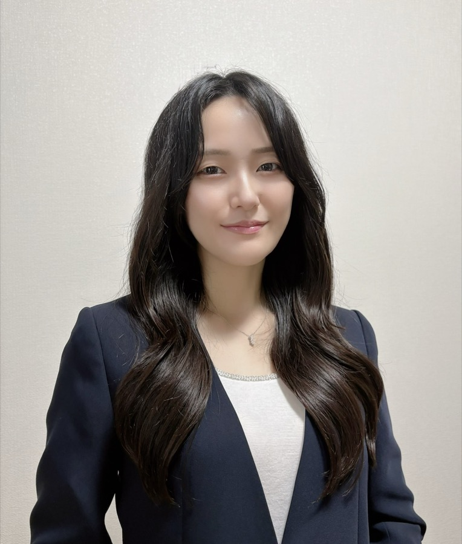

ホーム › 監修者紹介
Supervisor
監修者紹介
設問設計・スコアロジック・アラートロジックは、理学療法士の監修を受けています。

保有資格
- 理学療法士（2015年4月取得）
- 看護師（2025年4月取得）
- 健康経営アドバイザー（2025年7月認定）
三橋 彩乃
MITSUHASHI AYANO ／ 理学療法士・看護師
整形外科で運動器疾患・スポーツ障害・高齢者のリハビリテーションに累計4万人以上従事。腰痛や腰椎分離症の研究活動にも注力してきました。現在はフリーランスの理学療法士・看護師として、企業・自治体・学校の健診業務、個人契約や業務委託でのリハビリテーション、健康相談、働く人の障害予防・疾病予防に関わっています。
監修を引き受けた理由
以前から代表の本田さんの背景や信念に共感していました。この度監修のお話をいただき、私の医療従事者としての知識や経験が、働くみなさんの心身の健康やお仕事の継続にお役に立てればと思い、喜んで引き受けさせていただきました。
Scope
監修いただいている範囲
① 設問設計
週次6問の内容・表現・選択肢の粒度。現場の方が2分で無理なく答えられ、かつ変化を捉えられる設計になるよう監修を受けています。
② スコアロジック
疲労・痛み・睡眠・ストレス・帰属感・やりがいの各回答を、どのように重み付けしてスコア化するか。部位別の痛みの扱いを含みます。
③ アラートロジック
どの水準・どの変化幅を「要注意」「高リスク」「緊急」として管理者に通知するか。前週比の悪化幅の閾値設計を含みます。
Adoryは医療機器ではなく、診断や治療を行うものではありません。
監修は、計測項目とスコア設計の妥当性についての専門的助言をいただくものです。
監修は、計測項目とスコア設計の妥当性についての専門的助言をいただくものです。
Profile
経歴
経歴
2015年4月
北千葉整形外科へ入職。理学療法士として運動器疾患、スポーツ障害、高齢者など累計4万人以上のリハビリテーションに従事。腰痛や腰椎分離症の研究活動にも注力。
2025年4月
ちば県民保健予防財団へ非常勤職員として入職。看護師として企業・自治体・学校の健診業務に従事。
現在
フリーランスの理学療法士・看護師として、個人契約や業務委託でリハビリテーション、健康相談、働く人の障害予防・疾病予防に関わる。
学歴
2011年3月
千葉県立成東高等学校 卒業
2011年4月〜2015年3月
埼玉医科大学 保健医療学部 理学療法学科 入学・卒業
2022年4月〜2025年3月
千葉市青葉看護専門学校 看護学部 看護学科 入学・卒業
研究・発表
研究テーマ
腰椎分離症、腰痛、体幹
実績
国内学術大会での発表を多数（二桁回数）、論文執筆は筆頭2本・共著多数（二桁本数）。
監修設計の詳細は、資料でご確認いただけます。
設問ごとの意図、スコアの算出方法、アラートの閾値設計をまとめた資料をお送りします。
お見積りや無料トライアルなども柔軟にご相談いただけます